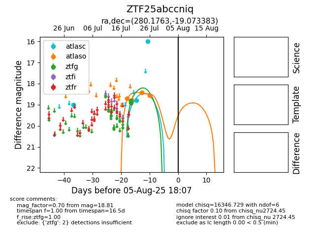

Target ZTF25abccniq at 2025-07-23 11:52, see:
FINK: fink-portal.org/ZTF25abccniq
Lasair: lasair-ztf.lsst.ac.uk/objects/ZTF25abccniq
ALeRCE: alerce.online/object/ZTF25abccniq
alt names
ZTF25abccniq (ztf,fink)
coordinates:
equatorial (ra, dec) = (280.1763,-19.07338)
galactic (l, b) = (14.6985,-6.29402)
photometry
last atlaso=16.33, ztfg=18.81
1 atlaso, 2 ztfg detections
